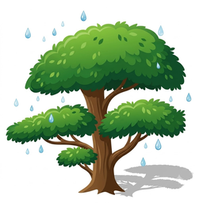

Show your screen on the CYDShow any window, tab or your whole screen on the ESP32 Cheap Yellow Display (3.5", 3.2", 2.8" or 2.4", several makers). Follow the three steps. Everything happens in this web page, there's nothing to download.
Put the program on the board (only the first time)
Which board do you have? Measure the screen corner to corner, and count the USB sockets on the board.
Not sure? The model number is printed on the back of the board. The screen stays black after installing? Try the next 2.8" choice. Colours look wrong? Use the Fix colours button in step 3.
Plug the board into the computer with a USB cable. Click the button, pick your board from the list, then click Install. It takes about a minute. Don't unplug the cable while it works.
The page is using the board. Click Disconnect in step 2 first, then install.
When it's done, close the installer window. The board shows "Screen mirror".
Connect to the board
🔌 With the USB cable
Always works. Pick your board from the list (it often has USB, CH340 or serial in its name).
📶 Over Wi-Fi
No cable needed, after you set up Wi-Fi once (connect with the cable first). Type the name shown on the board.
📶 Set up Wi-Fi (optional, then you won't need the cable)
Use your home Wi-Fi (2.4 GHz). The name and password go through the cable into the board only. Many school networks block this, so the cable is the way to go there.
Share my screen
Choose what to show: a whole screen, one window, or one browser tab. A single window or tab is easier to read on the small display.
🎨 Colours look strange (red looks blue, or everything looks like a photo negative)? Click until they look right. The board remembers it.
Something not working?
My board isn't in the list
Try a different USB cable: some cables only charge and can't carry data. Try another USB port too. On Windows, you may need the free CH340 driver (ask a grown-up to install it). Close other programs that might be using the board, such as the Arduino IDE or PlatformIO.
"Board didn't answer"
The board needs the Screen Mirror program from step 1. If you installed it already, unplug the board, plug it back in, wait 3 seconds and connect again.
Wi-Fi: "Can't reach the board"
Check that the board's screen says Wi-Fi is ready and shows a name like cyd.local, and that the computer is on the same Wi-Fi. If Chrome asked to access devices on your local network, click Allow (you can change it with the icon at the left of the address bar). If the name doesn't work, type the number shown under it instead (like 192.168.0.177). Some networks, especially at school, don't let devices talk to each other: use the cable there.
Over Wi-Fi it stops after a while
The board may be restarting because its power supply is too weak for Wi-Fi: try a different USB charger or power bank (1 A or more), or a shorter cable. The page waits for it to come back by itself.
The picture freezes when I switch windows
Keep this browser window open (it can be behind other windows, just don't minimise or close it).